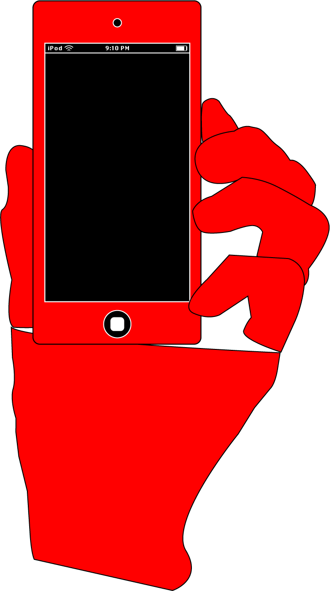

The Smartphone
On June 29th, 2007, Steve Jobs introduced the first touch-based smartphone to the world. September of that year also saw the release of the iPod Touch, which I must have gotten my hands on sometime around 2007-2009. I remember sitting on the couch in awe at what was before me; a fruit-slicing game whereby my index-finger was the blade. Neither the GameBoy, GameCube, or Nintendo Wii could compare to this tiny marvel of technology. This website serves as a nostalgia trip to some of the most popular phone games.


 Watch the iPhone Reveal Here!
Watch the iPhone Reveal Here!